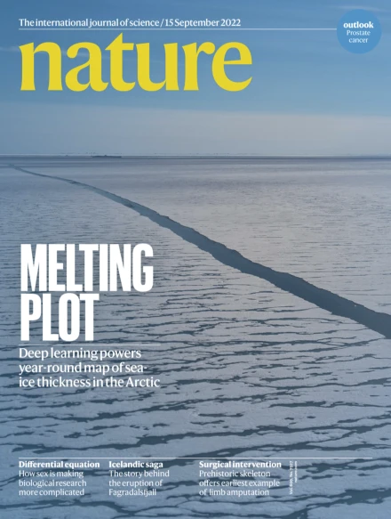

ARTICLES
NATURE

Melting plot
The cover shows melting sea ice in the Arctic during August 2018
photographed from the Alfred Wegener Institute’s airborne sea-ice
survey IceBird.Climate change is diminishing Arctic sea ice at rate
unseen for some 1,000 years. But mapping sea-ice thickness during the
crucial melt period from May to September has not readily been possible.
In this week’s issue, Jack Landy and his colleagues provide estimates of Arctic sea-ice thickness for the whole year.
The researchers used deep learning and numerical simulations
of observations collected by the ESA CryoSat-2 satellite to generate
their data set for the melt period, verifying them with IceBird’s
airborne measurements. The team hopes the year-round record for
sea-ice thickness will enable better understanding of climate feedbacks
in the Arctic.